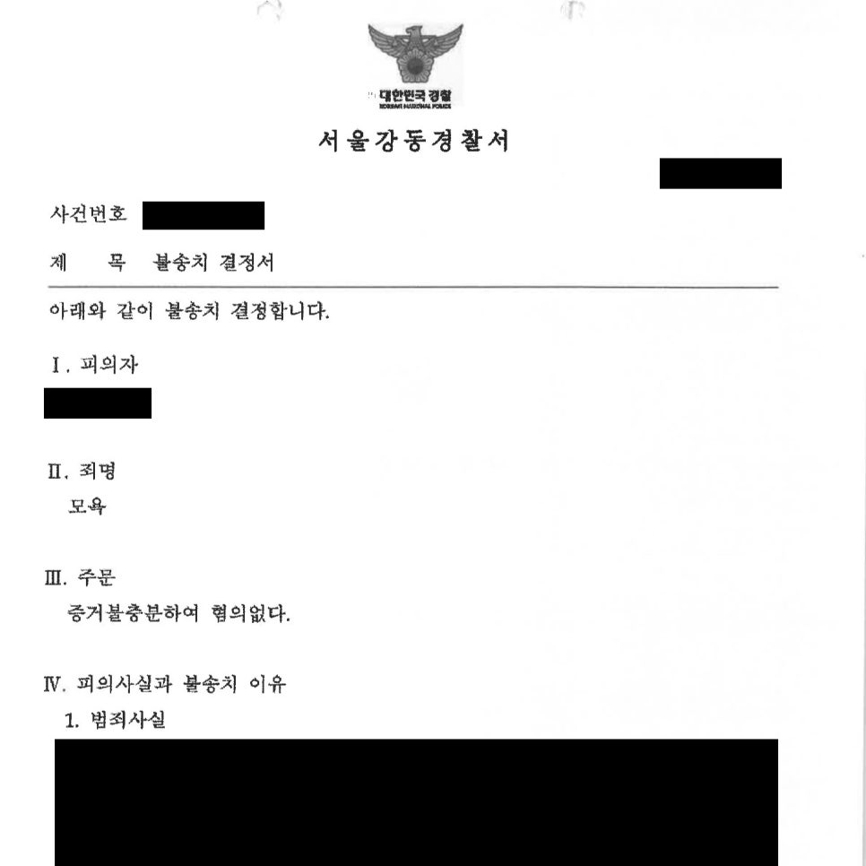

핵심 결과
의뢰인은 병원 이용 후 불만족스러운 리뷰를 남겼다가 모욕죄로 고소를 당했습니다.
경찰 출석 요구를 받은 뒤 전과가 생길까 두려워 상담을 요청했습니다.
법무법인 우린은 해당 리뷰가 단순 욕설이 아니라 실제 이용 경험을 바탕으로 한 소비자의 평가라는 점을 정리했습니다.
그 결과 경찰 단계에서 불송치(혐의 없음) 결정을 받았습니다.
| 구분 | 내용 |
|---|---|
| 사건 분야 | 온라인 리뷰, 모욕죄 고소 |
| 문제 상황 | 병원 이용 후 작성한 리뷰가 형사고소로 이어짐 |
| 핵심 쟁점 | 모욕적 표현인지, 소비자 평가인지, 고의가 있었는지 |
| 주요 대응 | 리뷰 맥락 정리, 판례 검토, 변호인 의견서 제출 |
| 최종 결과 | 불송치(혐의 없음) |
실제 상담 예시
“변호사님, 제 돈 내고 진료받은 뒤 쓴 후기인데 제가 범죄자인가요?”
“대기가 길고 응대가 불만족스러워서 리뷰를 남겼는데, 경찰서에서 모욕죄 고소가 들어왔다고 연락이 왔습니다.”
“합의금을 줘야 하나요? 전과자가 되는 건가요?”
온라인 리뷰 사건에서 실제로 자주 나오는 질문입니다.
식당, 병원, 카페, 미용실 등에서 불만족 후기를 남겼다가 고소장을 받는 사례가 늘고 있습니다.
하지만 고소가 접수되었다고 해서 곧바로 죄가 성립하는 것은 아닙니다.
초기 경찰 조사에서 리뷰의 전체 맥락과 작성 목적을 어떻게 설명하느냐가 중요합니다.
Q&A로 보는 리뷰 고소
| 질문 | 답변 |
|---|---|
| 내 돈 내고 쓴 후기인데 고소가 가능한가요? | 가능합니다. 고소장은 접수될 수 있습니다. |
| 고소되면 무조건 벌금인가요? | 아닙니다. 표현 내용과 맥락에 따라 혐의 없음이 될 수 있습니다. |
| 무조건 합의해야 하나요? | 아닙니다. 먼저 죄가 성립하는지 검토해야 합니다. |
| 경찰 조사에 혼자 가도 되나요? | 표현 하나가 불리하게 기록될 수 있어 조심해야 합니다. |
| 핵심은 무엇인가요? | 실제 경험에 근거한 평가인지, 모욕 목적이 있었는지입니다. |
사건 개요
의뢰인은 서울의 한 병원을 방문했습니다.
이용 과정에서 대기 시간과 응대 방식에 불만을 느꼈고, 이후 온라인 리뷰를 남겼습니다.
표현이 다소 강하게 느껴질 수는 있었지만, 전체적으로 보면 특정인을 욕보이려는 목적보다는 병원 서비스에 대한 실망감을 표현한 내용이었습니다.
그런데 병원 측은 해당 리뷰를 문제 삼아 의뢰인을 포함한 여러 작성자를 모욕죄로 고소했습니다.
경찰서에서 연락을 받은 의뢰인은 큰 불안감을 느꼈습니다.
살면서 경찰 조사를 받은 적이 없었기 때문입니다.
위험했던 이유
- 온라인 리뷰가 형사고소로 이어졌습니다.
- 모욕죄는 전과 기록으로 이어질 수 있습니다.
- 경찰 조사에서 감정적으로 대응하면 불리한 진술이 남을 수 있습니다.
- 병원 측이 다수 리뷰 작성자를 함께 문제 삼은 상황이었습니다.
- 합의금 압박을 받을 가능성도 있었습니다.
해결 전략
1. 리뷰 전체 문맥을 먼저 정리했습니다
리뷰 문장 하나만 떼어 보면 거칠게 보일 수 있습니다.
하지만 형사사건에서는 전체 문맥이 중요합니다.
리뷰가 병원 이용 경험에 대한 평가인지, 특정인을 인격적으로 공격한 것인지 구분해야 합니다.
의뢰인의 표현이 의료 서비스에 대한 불만 표시라는 점을 정리했습니다.
2. 모욕의 고의가 없다는 점을 의견서로 설명했습니다
모욕죄는 단순히 기분 나쁜 표현이 있었다고 바로 성립하는 것이 아닙니다.
표현의 목적, 작성 경위, 게시 맥락, 공공의 관심 여부 등을 함께 봅니다.
해당 리뷰가 다른 소비자에게 이용 경험을 알리려는 목적이었다는 점을 법리적으로 설명했습니다.
3. 비슷한 리뷰와 객관 자료를 비교했습니다
의뢰인만 악의적으로 글을 쓴 것이 아니라는 점도 중요했습니다.
다른 이용자들이 남긴 비슷한 불편 후기, 병원 이용 흐름, 실제 경험에 근거한 정황을 함께 정리했습니다.
수사기관이 이 사건을 단순한 욕설 사건이 아니라 소비자 평가 문제로 볼 수 있도록 구성했습니다.
| 대응 항목 | 준비한 내용 |
|---|---|
| 리뷰 분석 | 문장 일부가 아니라 전체 흐름과 작성 목적 검토 |
| 법리 검토 | 모욕죄 성립 요건과 관련 판례 정리 |
| 증거 수집 | 실제 이용 경험, 비슷한 후기, 정황 자료 확인 |
| 조사 대비 | 감정적 진술을 피하고 핵심 쟁점 중심으로 준비 |
| 의견서 제출 | 소비자 평가와 모욕 고의 부재를 수사기관에 설명 |
결과
경찰은 제출된 변호인 의견서와 관련 자료를 검토했습니다.
리뷰의 전체 맥락, 작성 경위, 표현의 목적 등을 종합적으로 본 결과, 모욕죄 혐의를 인정하기 어렵다고 판단했습니다.
최종적으로 사건은 검찰로 넘어가지 않고 경찰 단계에서 불송치(혐의 없음)로 마무리되었습니다.
최종 결과
병원 리뷰로 모욕죄 고소를 당한 사건에서 불송치(혐의 없음) 결정을 받았습니다.
의뢰인은 합의금 부담과 전과 위험에서 벗어나 일상으로 돌아갈 수 있었습니다.
리뷰 고소 사건에서 조심할 점
리뷰 고소를 받으면 억울한 마음이 먼저 듭니다.
하지만 경찰 조사에서 감정적으로 “틀린 말 한 게 없다”고만 말하면 오히려 불리해질 수 있습니다.
반대로 겁을 먹고 무조건 “죄송하다”고 말하는 것도 좋지 않습니다.
먼저 표현의 내용, 작성 경위, 실제 경험, 증거 자료를 정리해야 합니다.
온라인 리뷰 사건은 단순한 말싸움이 아니라 형사기록으로 남을 수 있는 사건입니다.
결론
병원 리뷰, 식당 리뷰, 카페 후기 때문에 고소를 당했다고 해서 무조건 죄가 되는 것은 아닙니다.
하지만 초기 대응을 잘못하면 불필요하게 합의를 하거나, 불리한 진술이 남을 수 있습니다.
리뷰의 전체 맥락과 작성 목적을 정확히 정리하는 것이 중요합니다.
사무장·상담실장 없이 변호사가 직접 상담합니다
법무법인 우린은 강성수 변호사가 직접 상담하고, 경찰 조사 대비부터 변호인 의견서 작성까지 직접 진행합니다.
온라인 리뷰나 댓글 때문에 경찰 연락을 받았다면, 먼저 어떤 표현이 문제 되는지 정확히 확인해야 합니다.
이 글은 일반적인 법률 정보 제공을 위한 자료이며, 개별 사건의 결과를 보장하지 않습니다. 구체적인 대응은 사실관계와 증거에 따라 달라질 수 있습니다.